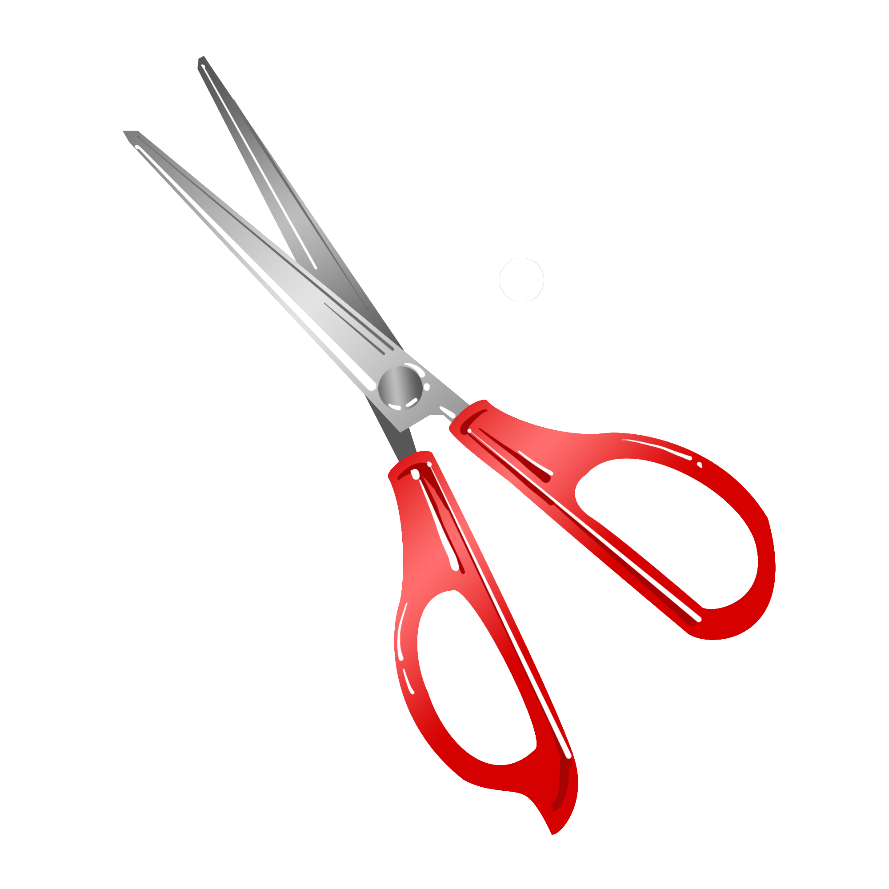

🪔
✦ ✦ ✦
भव्य शुभारंभ समारोह
नयाँ सुरुवातको पवित्र उत्सव — परम्परा र उल्लाससँगै
तलको पवित्र रिबन काटेर समारोहको विधिवत् उद्घाटन गर्नुहोस्

बायाँ✦ पवित्र रिबन ✦
दायाँ
रिबन काटेपछि तपाईं स्वचालित रूपमा प्रायोजक पृष्ठमा पुनः निर्देशित हुनुहुनेछ।